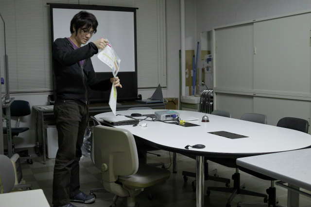

| ・ 2回目修論・卒論発表リハーサル (H25.02.15) | |||
去年も今年も10時スタートですが、人数が違います。M2は1人から4人、B4は4人から6人に増えています。合間に休憩入れても20時前までリハーサルでした。学生は忙しいので発表すればプレゼン準備に戻れますが、教員は最初から最後まで。M1は絶賛就活中、ガンバレ！年々前倒しで大変です。 |
|||
|
午前は撮り忘れで、午後はN島くんから |
次はH林くん、粒子の捉え方アッピールね | ||
|
ピントが |
合わない | ||
|
F木くん！ |
さぁ午後休憩だ | ||
|
M2はK岡さんから |
完成度高けーなオイ、K城くん | ||
|
凝りに凝ったアニメが未完のH野くん |

F島くんでオシマイ | ||